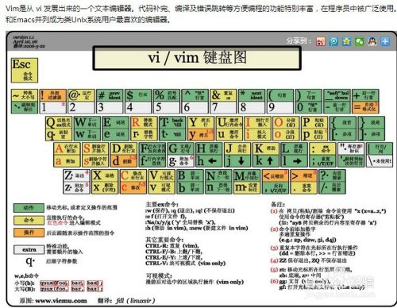
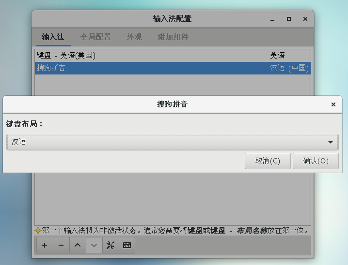
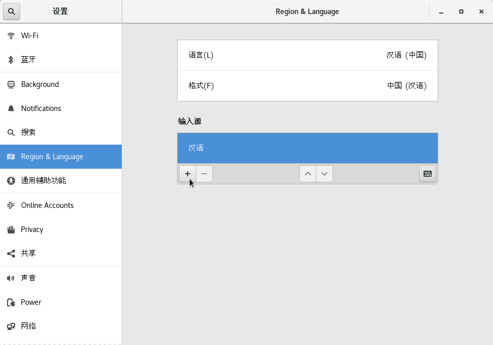
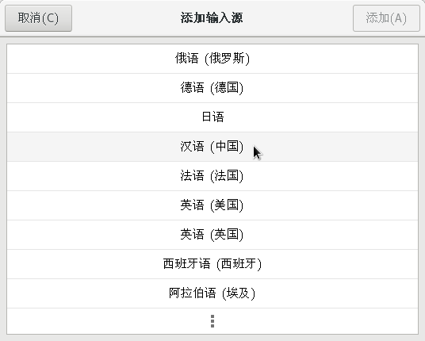

CentOS 使用基础
切换用户
任意界面右键打开终端
su:切换到root,root对应的根目录为/,可以cd /
su [username]:切换到普通用户,对应的home目录为~,可以cd ~
/表示根目录
~表示当前用户的home目录
.表示当前目录
帮助和手册
帮助: [命令] --help查看某命令的帮助菜单.
用法: [命令] --usage查看某命令的使用说明.
手册: man [命令]查看命令的手册, 如man rpm可以查看rpm的命令手册.
软件包的管理
查询软件信息
- 查询某软件包的信息:
rpm -qa | grep -i [软件关键词] - 查询系统中已经安装的软件:
rpm -qa - 查询一个已经安装的文件du于哪个软件包；
rpm -qf 文件名的绝对路径 - 查询已安装软件包都安装到何处；
rpm -ql 软件名 - 查询一个已安装软件包的信息:
rpm -qi 软件名 - 查看一下已安装软件的配置文件；
rpm -qc 软件名 - 查看一个已经安装软件的文档安装位置：
rpm -qd 软件名 - 查看一下已安装软件所依赖的软件包及文件；
rpm -qR 软件名
安装软件
- 安装
yum install [软件名] - 使用本地源安装
yum install [软件名] 本地包文件orrpm -ivh [本地包文件]
卸载软件
- 卸载软件:
sudo yum remove [软件名] - 删除已安装的软件(卸载依赖包):
sudo rpm -e -- [软件名] - 删除软件(不卸载依赖包):
sudo rpm -e --nodeps [软件名]
善用搜索功能
find [-H] [-L] [-P] [-Olevel] [-D help|tree|search|stat|rates|opt|exec] [path...] [expression]
为文件夹创建快捷方式
- 在合适地方
/opt/idata建立一个可执行打开/mnt/WinDiskG/Charleechan/Desktop/EDA工具安装包文件夹的命令文件godata.sh.
#!/bin/sh
nautilus /mnt/WinDiskG/Charleechan/Desktop/EDA工具安装包
并放一个合适的图标文件.
将该godata.sh文件添加可执行权限:chmod +x godata.sh
- 在桌面打开终端,输入
vim godata.desktop,添加以下代码,
[Desktop Entry]
Encoding=UTF-8
Version=1.0
Name=GoData
Comment=Goto_data
Exec=/opt/idata/godata.sh
Icon=/opt/idata/godata.PNG
Terminal=false
StartupNotify=true
Type=Application
Categories=Applications
vim 常用快捷键

清屏
clear : 终端屏幕向下翻一页，较为常用。 reset : 清空终端屏幕所有信息。
解压文件
根据压缩文件的后缀名,使用不同的解压命令解压.
- .tar 用 tar xvf 解压
- .gz 用 gzip -d或者gunzip 解压
- .tar.gz和.tgz 用 tar xzf 解压
- .bz2 用 bzip2 -d或者用bunzip2 解压
- .tar.bz2用tar –xjf 解压
- .Z 用 uncompress 解压
- .tar.Z 用tar xZf 解压
- .rar 用 unrar e解压
- .zip 用 unzip 解压
其中7z文件需要安装p7zip.
yum install p7zip
# .7z解压, x 表示解压缩, -r 递归解压缩, -o./, 注意-o和./之间无空格
7za x test.7z -o./
rar文件需要编译安装rar.
wget https://www.rarlab.com/rar/rarlinux-x64-6.0.1b1.tar.gz
tar -zxvf rarlinux-x64-6.0.1b1.tar.gz
cd rar
make
运行rar 命令，如果出现该错误rar: error while loading shared libraries: libstdc++.so.6: cannot open shared object file: No such file or directory, 则执行该命令：cp rar_static /usr/local/bin/rar
分卷解压
- 分卷
.tar文件：find ./ -print -name 'Base_IC06.18.000*.tar' -exec tar xvf {} \; - 分卷
.z01,.z02,.zip文件:# 合并文件 cat weblogic-linux.* > all.zip # 修复已损坏的压缩文件 zip -F all.zip # 正常解压 unzip all.zip
使用截图工具
- 在命令行中查
man gnome-screenshot，设置自己最常用的截图选项，这里我根据个人习惯，使用gnome-screenshot -abp进行框选截图(带光标).使用gnome-screenshot -wbp进行窗口截图带光标。 - 打开如下选项：Applications(应用)-系统工具-Settings(设置)-设备-Keyboard(键盘)；
- 下拉到最后，点+号新增快捷键，输入快捷键名称，上述命令，和快捷键。
安装VS Code
需要下载安装libXss.so,执行yum install libXScrnSaver或者去这里下载,更改执行权限,chmod +x libXScrnSaver-1.2.2-6.1.el7.x86_64.rpm,然后安装rpm -ivh libXScrnSaver-1.2.2-6.1.el7.x86_64.rpm, 如果提示需要其他的依赖，则增加--nodeps选项:rpm -ivh --nodeps libXScrnSaver-1.2.2-6.1.el7.x86_64.rpm.
访问Visual Studio Code官网,会自动下载一个
code-stable-x64-1614898391.tar.gz文件.解压文件:
tar xzf code-stable-x64-1614898391.tar.gz.移动到附加软件的目录:
sudo mv VSCode-linux-x64 /opt/vscode.添加可运行权限:
sudo chmod +x /opt/vscode/code.复制
sudo cp /opt/vscode/resources/app/resources/linux/code.png /usr/share/icons/.创建快捷方式到左上角的应用程序菜单中:
sudo vim /usr/share/applications/VSCode.desktop
[Desktop Entry]
Name=Visual Studio Code
Comment=Multi-platform code editor for Linux
Exec=/opt/vscode/code --no-sandbox
Icon=/usr/share/icons/code.png
Type=Application
StartupNotify=true
Categories=TextEditor;Development;Utility;
MimeType=text/plain;
运行VS Code:
/opt/vscode/code --no-sandbox,也许会出错,报/usr/lib64/libstdc++.so.6: version 'CXXABI_1.3.9' not found,以及usr/lib64/libstdc++.so.6: version 'GLIBCXX_3.4.21' not found的错,原因是GCC编译器版本低,或者已安装过高版本GCC编译器但未链接.解决办法如下:
- 查看libstdc++.so.6的软连接信息: 切换到
/usr/lib64目录,ls -l libstdc++.so*,发现现在libstdc++.so.6连接到libstdc++.so.6.0.19. - 查看libstdc++.so.6包含哪些动态库:
strings /usr/lib64/libstdc++.so.6 | grep GLIBC,strings /usr/lib64/libstdc++.so.6|grep CXXABI,发现的确没有CXXABI_1.3.9和GLIBCXX_3.4.21. - 方法一: 更新GCC编译器
- 确定当前GCC版本,
gcc --version,发现是gcc (GCC) 4.8.5 20150623 (Red Hat 4.8.5-44). - 在这里查询到,
GCC 5.1.0: GLIBCXX_3.4.21, CXXABI_1.3.9,因此要安装GCC 5.1.0之后的版本. - 下载
wget http://ftp.tsukuba.wide.ad.jp/software/gcc/releases/gcc-5.2.0/gcc-5.2.0.tar.bz2,解压tar -xvf gcc-5.2.0.tar.bz2 - 进入解压目录:
cd gcc-5.2.0, 下载编译gcc所需的依赖文件和库./contrib/download_prerequisites - 建立输出目录，用于存放编译时所有产生的中间文件,
mkdir gcc-temp,进入输出目录,cd gcc-temp - 执行configure配置,
../configure --enable-checking=release --enable-languages=c,c++ --disable-multilib - 编译gcc，指定编译使用的线程数为8，编译耗时较长，可能需要几个小时,
make -j8,这里为了避免影响系统的稳定性， - 执行"make install"和替换系统默认版本的gcc
- 查找本机已有的libstdc++.so文件:
find / -name "libstdc++.so*",找到新安装的libstdc++.so所在位置,并切换到该位置.
- 确定当前GCC版本,
- 方法二:
- 在这里查询到,
GCC 5.1.0: GLIBCXX_3.4.21, CXXABI_1.3.9,还查询到GCC 5.1.0: libstdc++.so.6.0.21,因此要安装6.0.21及之后的版本. - 在网上找到了一个libstdc.so_.6.0.26.zip,使用
unzip libstdc.so_.6.0.26.zip将其解压. 或者直接点我下载,
- 在这里查询到,
- 把下载或安装GCC得到的
libstdc++.so.6.*.*拷贝到/usr/lib64目录:sudo cp ./libstdc++.so.6.0.26 /usr/lib64/libstdc++.so.6.0.26 - 备份原来的
libstdc++.so.6符号链接:sudo cp /usr/lib64/libstdc++.so.6 /usr/lib64/libstdc++.so.6.bak - 删除原来的符号连接:
sudo rm -rf /usr/lib64/libstdc++.so.6 - 新建新符号连接:
sudo ln -s /usr/lib64/libstdc++.so.6.0.26 /usr/lib64/libstdc++.so.6 - 查看当前libstdc++.so.6中包含哪些动态库:
strings /usr/lib64/libstdc++.so.6 | grep GLIBC,strings /usr/lib64/libstdc++.so.6|grep CXXABI.
- 查看libstdc++.so.6的软连接信息: 切换到
执行文件关联
cd /usr/share/applications,su [你的用户名]- 执行文件关联：
xdg-mime default VSCode.desktop text/markdown. - 查询文件关联:
xdg-mime query default text/markdown.
安装搜狗输入法
搜狗和谷歌输入法等使用的是fcitx框架，需要安装fcitx! 不可直接卸载自带的ibus 输入法.
单独卸载ibus软件, 不卸载依赖包:
rpm -e --nodeps ibus安装epel库源
yum -y install epel-release安装fcitx
yum -y install fcitx fcitx-pinyin fcitx-configtool设置fcitx为自启动项：打开
应用程序>附件>优化>开机启动程序>添加fcitx为自启动项在 /etc/profile.d 中增加一个配置脚本命名为
fcitx.sh:vim /etc/profile.d/fcitx.shexport GTK_IM_MODULE=fcitx export QT_IM_MODULE=fcitx export XMODIFIERS=@im=fcitx- 修改重启或关机时 systemd 等待 fcitx 进程的时长, 避免自启动后开关机时间过长, 需要修改fcitx配置文件:
vim /etc/systemd/system.conf, 将其中的#DefaultTimeoutStopSec=90s这一行前面的#去掉，然后将其赋值改为10s保存.
安装搜狗输入法依赖软件 :
yum install qtwebkit -y在火狐浏览器中,下载搜狗输入法.
http://cdn2.ime.sogou.com/dl/index/1524572264/sogoupinyin_2.2.0.0108_amd64.deb?st=jpTlz-vO-Of4mW1f10EBCg&e=1570252581&fn=sogoupinyin_2.2.0.0108_amd64.deb安装dpkg包：
yum -y install dpkg安装alien包:
yum -y install aliendeb -> rpm包转换:
sudo alien -r --scripts sogoupinyin_2.2.0.0108_amd64.deb, 直到转换完成sogoupinyin-2.2.0.0108-2.x86_64.rpm generatedrpm包安装 :
sudo rpm -ivh --force sogoupinyin-2.2.0.0108-2.x86_64.rpm搜狗拼音的库,创建软链接：
sudo ln -s /usr/lib/x86_64-linux-gnu/fcitx/fcitx-sogoupinyin.so /usr/lib64/fcitx/fcitx-sogoupinyin.so sudo ln -s /usr/lib/x86_64-linux-gnu/fcitx/fcitx-punc-ng.so /usr/lib64/fcitx/fcitx-punc-ng.so重启系统。输入
fcitx-configtool启动，添加键盘时取消勾选，输入sogou过滤，看到Sogou Pinyin输入法，点击添加进去.
设置其键盘布局为 汉语. 
并在系统设置中设置默认的键盘  
然后按SHIFT键切换输入法，测试中文输出即可。
安装苹方字体
首先将平方字体文件拷贝到Linux机器上。
# centos 安装fontconfig 工具包
yum install -y fontconfig mkfontscale
# ubuntu上
# sudo apt-get -y install fontconfig xfonts-utils
# 查看已经安装的中文字体
fc-list :lang=zh
# 安装微软雅黑字体
# 1. 把MSYH.TTF复制到/usr/share/fonts/目录下，使用如下命令：
cd /root/
cp MSYH.TTF /usr/share/fonts/
# 2. 然后建立字体索引信息，更新字体缓存，使用如下命令：
cd /usr/share/fonts/
mkfontscale
mkfontdir
fc-cache
# 查看是否已安装成功
fc-list :lang=zh
然后打开 应用程序>附件>优化>字体, 修改窗口标题、界面、文档、等宽字体等，然后reboot即可。
执行某程序时报错
例如,提示报错缺少 libXp.so.6,去这里搜索libXp.so.6,可以发现其位于libXp库,于是
# 安装32位libXp
yum install libXp.i686
# 安装64位libXp
yum install libXp
安装WPS
- 安装WPS必须字体
首先下载字体,解压
mkdir -p /usr/share/fonts/wps_symbol_fonts
cp -r ./wps_symbol_fonts/* /usr/share/fonts/wps_symbol_fonts/
# 权限设置操作如下：
cd /usr/share/fonts/
chmod 755 wps_symbol_fonts
cd /usr/share/fonts/wps_symbol_fonts
chmod 644 *
# 接着生存缓存配置信息，具体操作如下：
cd /usr/share/fonts/wps_symbol_fonts
mkfontdir
mkfontscale
fc-cache
使用Firefox浏览器去WPS官网点击下载，选择
64位RPM格式中的For x64.找到下载的安装包,安装之:
rpm -ivh wps-office-11.1.0.10161-1.x86_64.rpm.在终端输入
wps可以启动WPS.